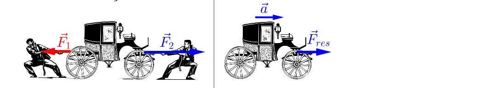
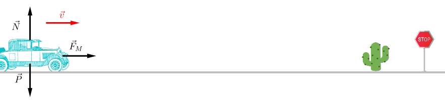
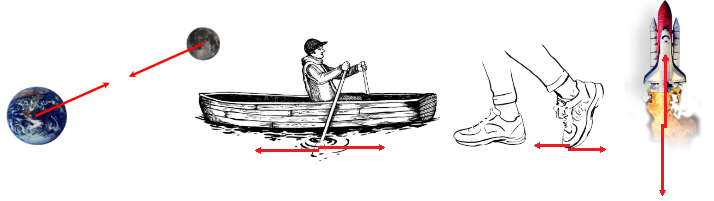
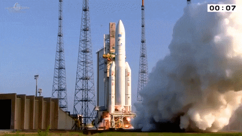
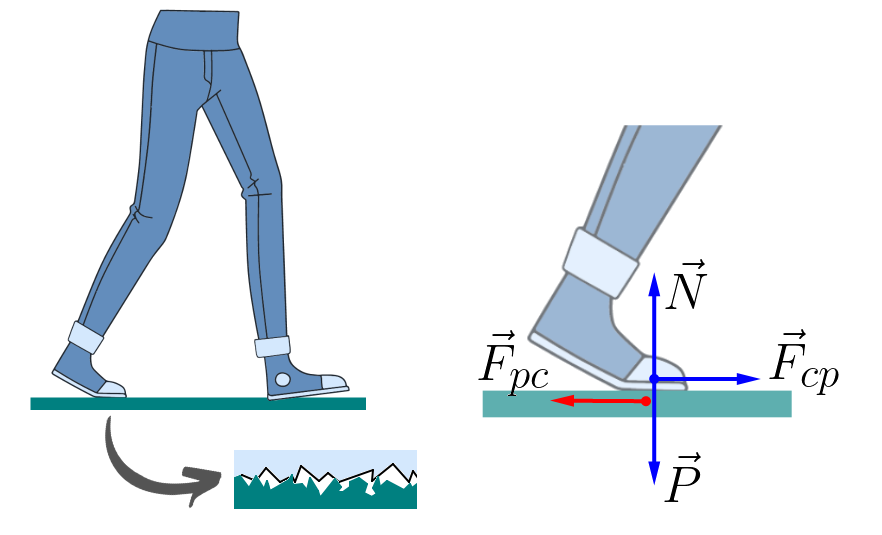

Aula2-12: A segunda e a terceira leis de Newton
A segunda lei de Newton diz que a força resultante que age sobre um corpo é proporcional à aceleração que ela imprime a esse corpo. Mais precisamente: a força resultante é igual ao produto da massa do corpo pela aceleração.

No Sistema Internacional, a unidade de medida de força é o newton:
A segunda lei torna a primeira inútil?
Observe que, segundo essa lei, se não há força resultante agindo sobre um corpo, a aceleração dele é nula — ou seja, a velocidade é constante. Com isso, podemos afirmar que a primeira lei de Newton (lei da inércia) está implícita na segunda lei. Por essa razão, alguns estudiosos defendem que a lei da inércia é dispensável, já que decorre da segunda lei. Há, porém, quem defenda a permanência da primeira lei por razões que não convém discutir aqui.
Equilíbrio mecânico
Dizemos que um corpo está em equilíbrio mecânico quando a força resultante que age sobre ele é nula. Nesse caso, a aceleração é zero e, portanto, a velocidade do corpo é constante.
-
Equilíbrio estático: chamamos de equilíbrio estático quando a velocidade é constante e igual a zero — ou seja, o corpo está parado.
-
Equilíbrio dinâmico: chamamos de equilíbrio dinâmico quando a velocidade é constante e diferente de zero — o corpo está se movendo.

Terceira lei de Newton
A terceira lei de Newton afirma que, para toda força aplicada sobre um corpo, existe outra força de mesma intensidade, mesma direção e sentido oposto, aplicada sobre o corpo que exerce a primeira força. A esse par de forças chamamos par ação-reação. Em outras palavras: se um corpo A age sobre um corpo B com uma força, então o corpo B reage sobre o corpo A com uma força de mesma intensidade e direção, porém de sentido contrário. Veja alguns exemplos:
I. A Terra atrai a Lua por meio da força gravitacional — a Terra age sobre a Lua —; então existe uma força de mesma intensidade que a Lua exerce sobre a Terra. Perceba que ambas as forças têm a mesma intensidade; no entanto, como a massa da Lua é muito menor que a da Terra, a Lua é muito mais acelerada do que a Terra.
II. Um remador aplica sobre a água, com o remo, uma força "para trás"; então a água aplica sobre o remo uma força "para a frente". O barco, ligado ao remador e ao remo, acaba se deslocando para a frente.
III. Ao caminhar, a pessoa empurra o chão "para trás" com os pés; o chão, então, empurra os pés dela "para a frente".
IV. O foguete ejeta gases para trás, empurrando-os; em reação, os gases empurram o foguete para a frente. É por isso que um foguete funciona até no vácuo, sem precisar "empurrar a atmosfera".

|
 |
Aceleramos o mundo ao caminhar?

Ao caminharmos, interagimos com o solo por intermédio das forças representadas no diagrama acima. As forças em azul são as que agem sobre o caminhante. Perceba que, desse movimento, resulta uma força resultante que propulsiona o indivíduo para a frente. Essa força resultante tem um par ação-reação, representado em vermelho, que age sobre o globo terrestre. Tal força também provoca aceleração no globo terrestre, mas essa aceleração é ínfima, pois a massa da Terra é colossal.